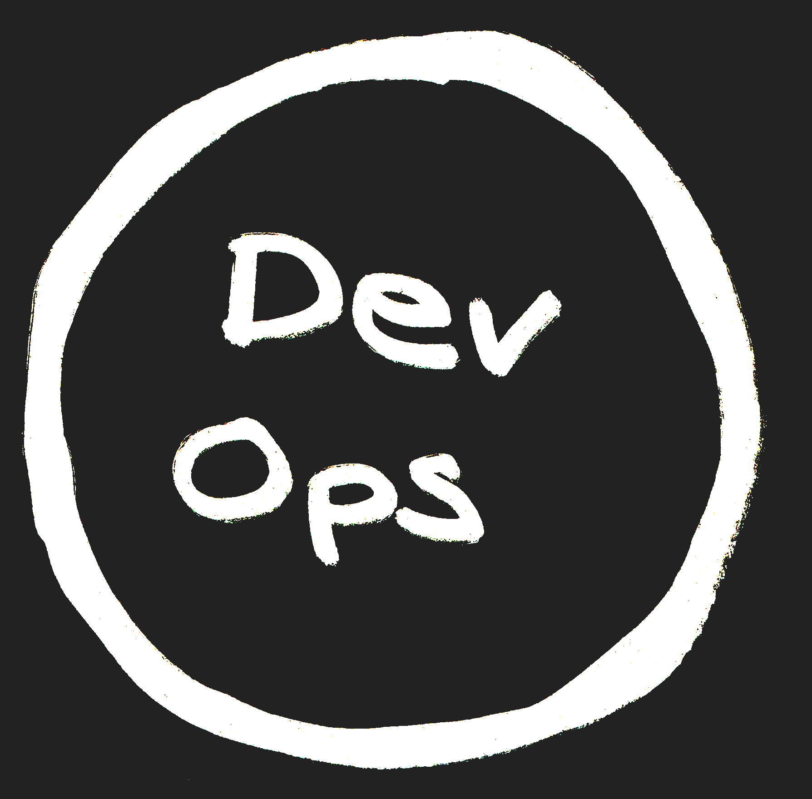
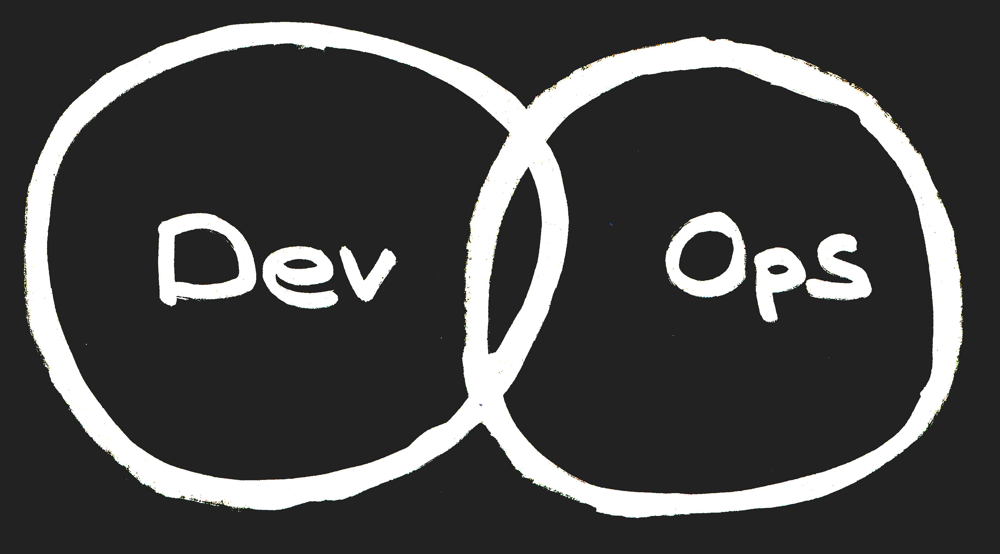
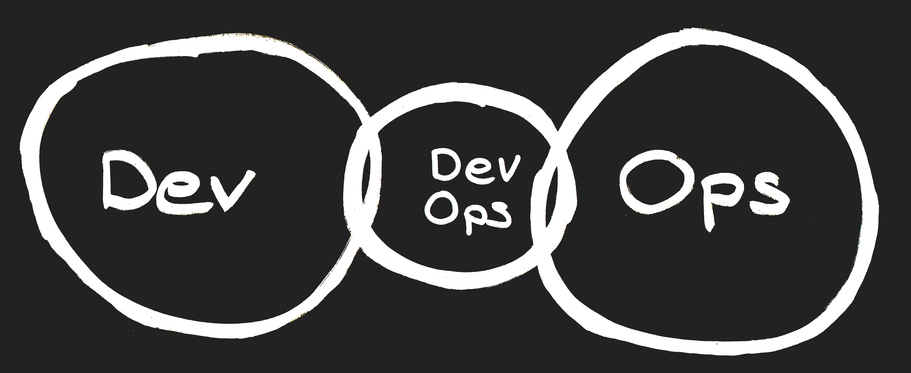
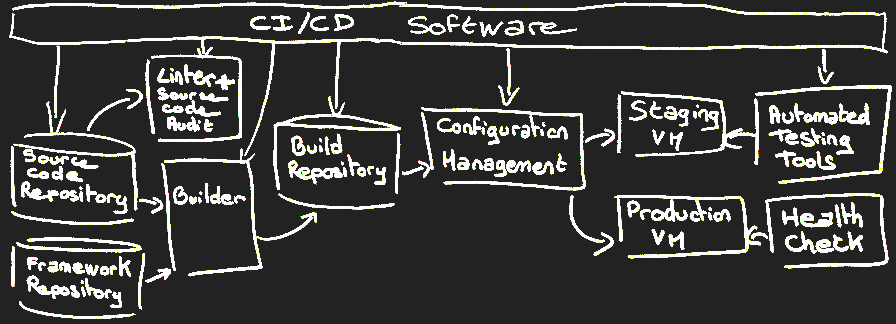
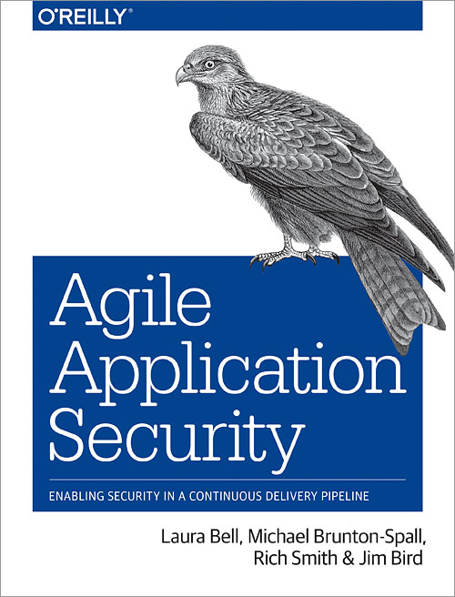

DevOps Overview
February 9th, 2018
By Didier BERNAUDEAU
1 - System Thinking

2 - Feedback loop

Three Ways
3 - Culture of continual Experimentation and Learning

DevOps Team
Cross functional team
Close-knit collaboration
DevOps Team



Technologies
- Microservice
- Virtualization (Server, Router, Firwall, Loadbalancer, ...)
- IAC (Infrastructure As Code)
- Container (Docker, ...)
- Software Supply Chain
Software Supply Chain

Deployment Strategy

New environment for each deployment
"Blue/green" or Canary release
For more information

Book

Agile Application Security
Enabling Security in a Continuous Delivery Pipeline

Securing DevOps
Safe services in the Cloud